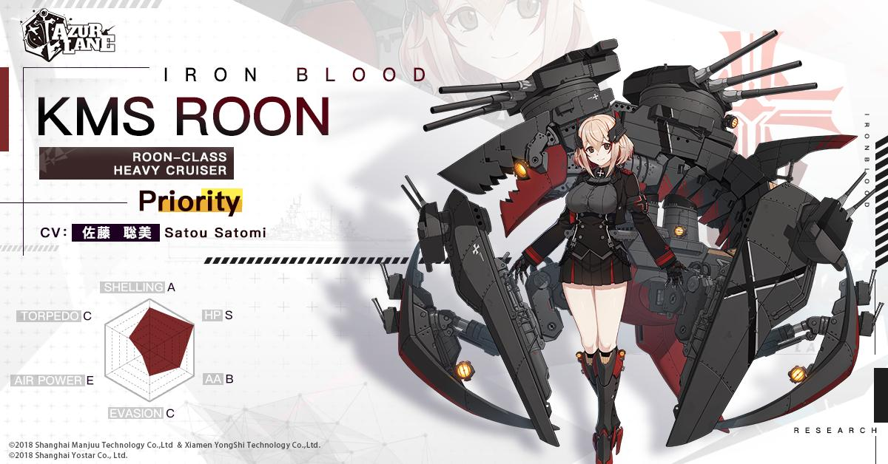

Roon

|
Roon is a character in Azur Lane, heavy cruiser member of the Iron Blood nation,
corresponding to the Nazi Germany. Unlike all other ships of her nation, she doesn't have any real life counterpart
in the Kriegsmarine, as she has been created with a collaboration with the online game World of Warships. A SMS Roon
in the Germany navy has existed before World War II, but the ship can't be considered as the counterpart of the Azur Lane
character. Roon is a Priority rarity ship and can be researched to be built. |